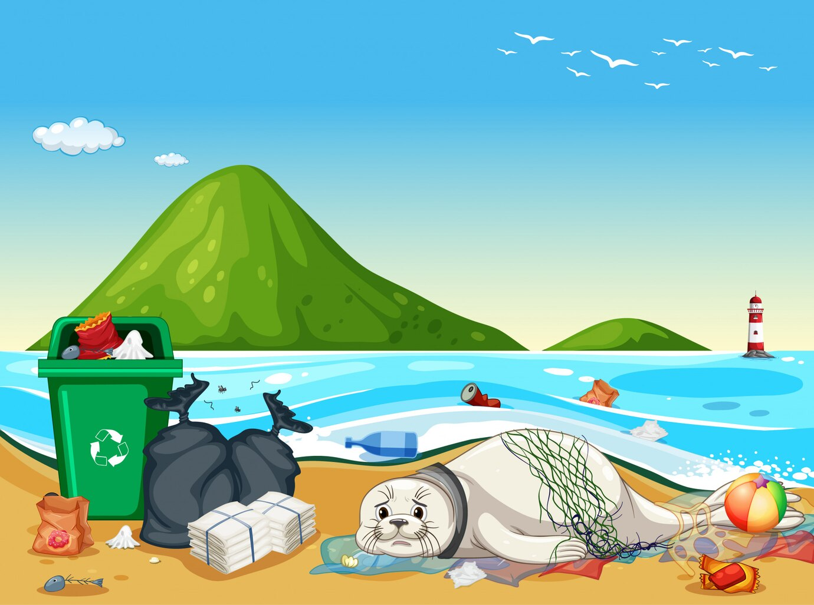

Os Oceanos
De acordo com a Plataforma 2030, cerca de 40% dos oceanos ao redor do globo estão sendo afetados direta e incisivamente por atividades humanas, como poluição e pesca predatória. Tais impactos, movidos em grande parte pela ganância resultam, principalmente, na perda de habitat e introdução de espécies invasoras em outras ambiências. Para além de toda a beleza natural proporcionada pela abundância de água na Terra, sua existência possui um motivo específico e fundamental: a manutenção da vida. As plantas marinhas, algas e cianobactérias também são responsáveis pela criação de oxigênio, e elas foram e ainda são parte responsáveis por bombear este elemento primordial à nossa respiração.
As algas marinhas são essenciais no ciclo de vida marinho visto que elas sustentam os animais herbívoros. Estes sustentam os carnívoros, e assim por diante. As principais funções das algas são a produção de oxigênio para toda a fauna e também servir de alimento para animais herbívoros, como caranguejos e peixes.

Para assegurar que tenhamos água para as futuras gerações, ações colaborativas são necessárias. O governo deve assegurar a manutenção e a ampliação do acesso à água, assim como da coleta e do tratamento de esgoto. Além disso, é preciso incentivar ações para preservação ambiental, reflorestamento em áreas de nascente, zoneamento urbano, uso de práticas sustentáveis na agricultura e redução de emissão de gases do efeito estufa. O uso excessivo do recurso na agricultura contribui fortemente para a escassez de água. Segundo a Organização das Nações Unidas para Alimentação e Agricultura (FAO), a agricultura e a pecuária são as atividades que mais consomem água no mundo, cerca de 70% do consumo mundial. Mas consumo consciente é dever de todos, e cada pessoa pode contribuir para a preservação desse recurso, utilizando-o com responsabilidade